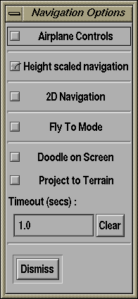
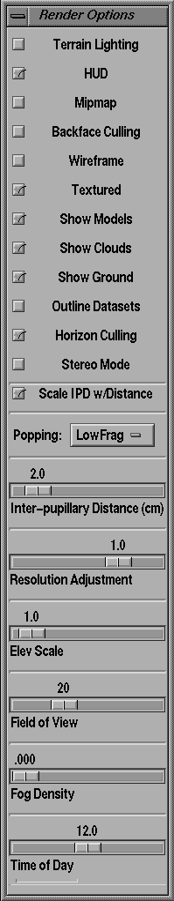
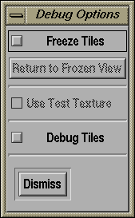
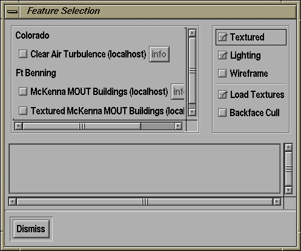

|
Navigation Options

The Navigation Options widget lets you control a number of attributes
of the TerraVision system that relate to how you the user can interact
with the data. The following options can be controlled from this
window.
- Airplane Controls -- toggles the way that the mouse
controls pitch. With it checked, moving the mouse away from you
pitches down (like an airplane joystick), and vice-versa.
- Height scaled navigation -- when this option is checked,
the a user's velocity will be scaled by altitude. This is done in an
attempt to maintain a constant visual flow no matter where the user
is. For example, without this feature, if you travel at 1000 km/s over
terrain then this will appear relatively fast; however, moving through
space towards the earth at this speed will be painfully slow.
- 2D Navigation -- when this option is checked, then the
viewpoint is always constrained to face straight down and be aligned
with the lat/long graticule. In addition, a "Slide" navigation mode is
enforced. This in effect gives a pan and zoom type interface. When you
select the "Views/2-D Viewer" option from the main TerraVision menu,
you are actually opening a 3-D Viewer with this option on by default.
- Fly To Mode -- when this mode is active, clicking the
left mouse button will be treated as a request to fly towards the part
of the terrain that you selected.
- Doodle on Screen -- the doodle on screen option lets
you write on the 3-D window using your mouse. The coordinates for the
text that you write will be sent to an OAA facilitator for
interpretation after the specified timeout delay (only if you are
connected to an OAA facilitator, e.g. you used the -oaa command line
option). N.B. If you set the timeout to 0, then the text will remain
on the screen until you clear it using the "Clear" button.
- Project to Terrain -- when this option is on, and the
Doodle on Screen option is also on, then once you have finished a
doodled it will be projected onto the terrain underneath it. This can
be used to create temporary annotations directly on the terrain.
|
Render Options

The Render Options widget lets you control a number of attributes of
the TerraVision system that relate to how the data is displayed. The
following options can be controlled from this window
Check boxes:
- Terrain Lighting -- toggles the use of lit or unlit
geometry and textures.
- HUD -- toggles the display of the heads-up display on
the 3-D viewer. This includes a textual display with various useful
information about the 3-D viewer process.
- Mipmap -- toggles the use of mipmaps for
texture-mapping. Mipmapping is a technique for improving the display
of textures, and can greatly reduce "swimming effects" that happen at
low incident angles.
- Wireframe -- toggles wireframe view of tile set.
- Textured -- toggles display of texture data.
- Show Models -- toggles the display of all VRML features
- Show Clouds -- toggles the display of the clouds
texture map when you are close to the ground
- Show Ground -- toggles the display of the ground plane.
This will not be required when browsing an entire earth
model.
- Outline Datasets -- toggles the display of a bounding
box around all datasets that are currently loaded, along
with a label giving the name of the dataset. This is an
extremely useful feature for locating very small
datasets that are embedded in the globe.
- Horizon Culling -- toggles the culling of all tiles
that are over the horizon. In effect, this is a special case of
occlusion culling for entire earth models so that you don't render
tiles on the other side of the planet.
- Stereo Mode -- toggles the use of stereo mode
- Scale IPD w/Distance -- in stereo mode, this option
will scale the inter-pupillary distance with altitude in order to
maintain a fused 3-D illusion.
Selections:
- Popping -- this widget lets you specify how TerraVision
managed the progressive display of higher resolution data. TerraVision
uses a quadtree structure so that each (non-leaf) tile has four higher
resolution tiles. The following options are available:
- LowFrag : this option will display all higher
resolution children as they are available. For areas of the quadtree
where TerraVision has not yet received the high resolution children,
it will cut out the correct quarter from the parent tile. Currently,
no tile stitching is done between the high resolution tiles and the
low resolution fragment so some tearing may be evident temporarily.
- LowRes : display the lower resolution parent along with
all of the available higher resolution children. This mode can cause
some artifacts when children tiles fight between the lower resolution
tile for priority.
- None : the four high resolution children are displayed
all at once and only when they have all completely loaded. This means
that higher resolution data is not displayed as soon as it is
received. Also artifacts can occur when you move around such that
tiles switch to very low resolution because TerraVision has not yet
loaded all of the high resolution data for the tiles adjacent to those
that were at the edge of the previous view frustum.
Sliders:
- Inter-pupillary Distance (cm) -- this slider lets you
alter the distance that TerraVision believes exists between the two
pupils of the viewer. This is during stereo mode to control the degree
of overlap for the left and right image. Alter this can help users to
fuse the stereo image for their visual system.
- Resolution Adjustment -- alters the level-of-detail
threshold used to evaluate the number of tiles to display for a
particular viewpoint
- Elev Scale -- changes the scale of the elevation data,
allowing you to exaggerate vertical heights for improved visual effect
- Field of View -- changes the solid field of view angle
for your viewpoint. (2 to 180 degrees.)
- Fog Density -- changes amount of fog.
- Time of Day -- changes lighting to simulate time of
day.
|
|
Debug Options

The Debug Options dialog contains a number of features that have been
useful in debugging the 3-D Viewer of TerraVision. However, they are
also useful for demonstrating how TerraVision works.
|
|
Feature Selection
The Feature Selection dialog lets you control the loading and display
of VRML models that can be overlayed on the terrain. The list view in
the window displays all of the VRML models that are available for the
set of GeoSets that have been loaded. You can load a model by clicking
on the toggle button before its name. The "Info" button is used to
display various metadata in the text window at the bottom of the
dialog.

The toggle widgets on the right side of the dialog have the following
behaviour:
- Textured -- toggles whether all models will be texture
mapped or not. If a model has no textures, then this option will
have no visual effect.
- Lighting -- toggles the use of an additional light for
the VRML scene. This light is located at the viewer's location at the
time the option is selected. This behaviour will likely change in the
future.
- Wireframe -- toggles whether all models are displayed
in wireframe or solid rendering mode.
- Load Textures -- when on, this option says that
whenever you load a new VRML model then you should also load all of
its texture maps. When this option is off, then we do not load the
textures. This option is useful to speed up loading when you do not
care about a textured model.
- Backface Cull -- toggles whether all models are
backface culled. Individual models can define whether they have
backface culling (e.g. the solid field of the VRML
IndexedFaceSet). This option is useful to force all models to backface
cull and hence reduce the polygon count, as well as look for any
polygons that are facing the wrong way.
|
|
Dismiss
Selecting this option will close the current 3-D Viewer window. You
can also achieve this by pressing 'Esc' on the keyboard,
or by double-clicking on the window's close widget in the
top-left corner.
|